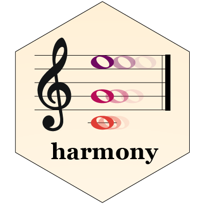

Applies harmony on PCA cell embeddings of a SingleCellExperiment.
Source:R/RunHarmony.R
RunHarmony.SingleCellExperiment.RdApplies harmony on PCA cell embeddings of a SingleCellExperiment.
Usage
# S3 method for class 'SingleCellExperiment'
RunHarmony(
object,
group.by.vars,
dims.use = NULL,
verbose = TRUE,
reduction.save = "HARMONY",
...
)Arguments
- object
SingleCellExperiment with the PCA reducedDim cell embeddings populated
- group.by.vars
the name(s) of covariates that harmony will remove its effect on the data.
- dims.use
a vector of indices that allows only selected cell embeddings features to be used.
- verbose
enable verbosity
- reduction.save
the name of the new slot that is going to be created by harmony. By default, HARMONY.
- ...
Arguments passed on to
RunHarmony.defaultthetaDiversity clustering penalty parameter. Specify for each variable in vars_use Default theta=2. theta=0 does not encourage any diversity. Larger values of theta result in more diverse clusters.
sigmaWidth of soft kmeans clusters. Default sigma=0.1. Sigma scales the distance from a cell to cluster centroids. Larger values of sigma result in cells assigned to more clusters. Smaller values of sigma make soft kmeans cluster approach hard clustering.
lambdaRidge regression penalty. Default lambda=1. Bigger values protect against over correction. If several covariates are specified, then lambda can also be a vector which needs to be equal length with the number of variables to be corrected. In this scenario, each covariate level group will be assigned the scalars specified by the user. If set to NULL, harmony will start lambda estimation mode to determine lambdas automatically and try to minimize overcorrection (Use with caution still in beta testing).
nclustNumber of clusters in model. nclust=1 equivalent to simple linear regression.
max_iterMaximum number of rounds to run Harmony. One round of Harmony involves one clustering and one correction step.
early_stopEnable early stopping for harmony. The harmonization process will stop when the change of objective function between corrections drops below 1e-4
ncoresNumber of processors to be used for math operations when optimized BLAS is available. If BLAS is not supporting multithreaded then this option has no effect. By default, ncore=1 which runs as a single-threaded process. Although Harmony supports multiple cores, it is not optimized for multithreading. Increase this number for large datasets iff single-core performance is not adequate.
plot_convergenceWhether to print the convergence plot of the clustering objective function. TRUE to plot, FALSE to suppress. This can be useful for debugging.
.optionsSetting advanced parameters of RunHarmony. This must be the result from a call to `harmony_options`. See ?`harmony_options` for parameters not listed above and more details.
Value
SingleCellExperiment object. After running RunHarmony, the corrected cell embeddings can be accessed with reducedDim(object, "Harmony").
See also
Other RunHarmony:
RunHarmony(),
RunHarmony.Seurat(),
RunHarmony.default()
Examples
if (FALSE) { # \dontrun{
## sce is a SingleCellExperiment R object
sce <- RunHarmony(sce, "donor_id")
} # }